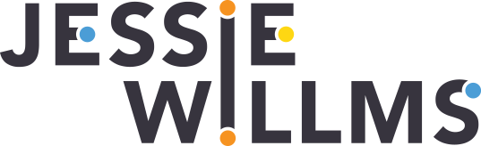
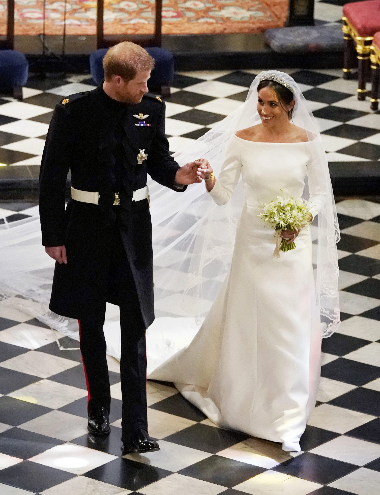
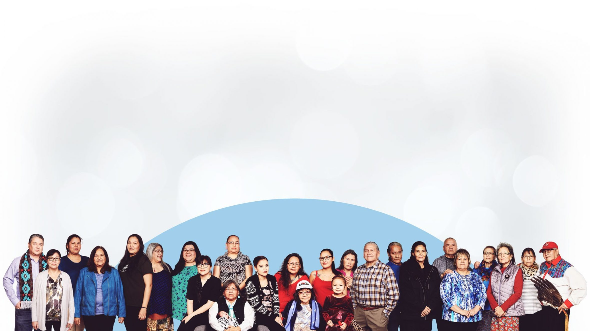

I am a visuals editor at the Globe and Mail.
Outside of a text editor, I play softball, ride my bike, and read in the various parks of downtown Toronto.
Find me on the internet @jessiewillms.
View my resume on LinkedIn.
Work
The Royal Wedding, decoded
Everything you needed (needed?) to know about the royal wedding
Beyond94: Truth and Reconciliation
Custom CMS measure the progress of each of the 94 Calls to Action from the TRC.